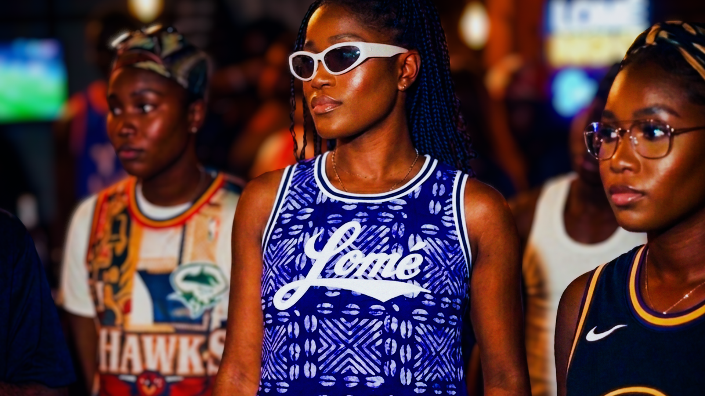
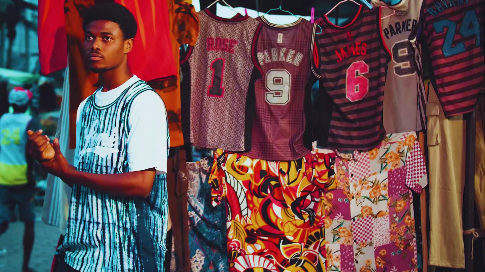
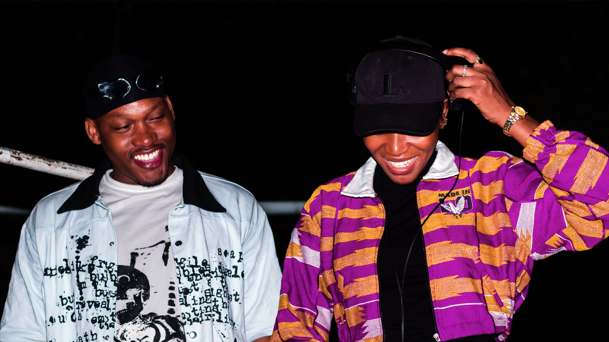
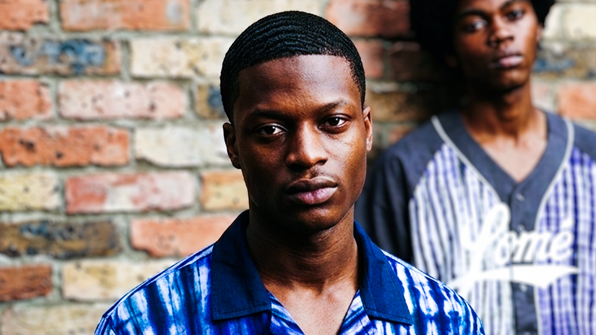
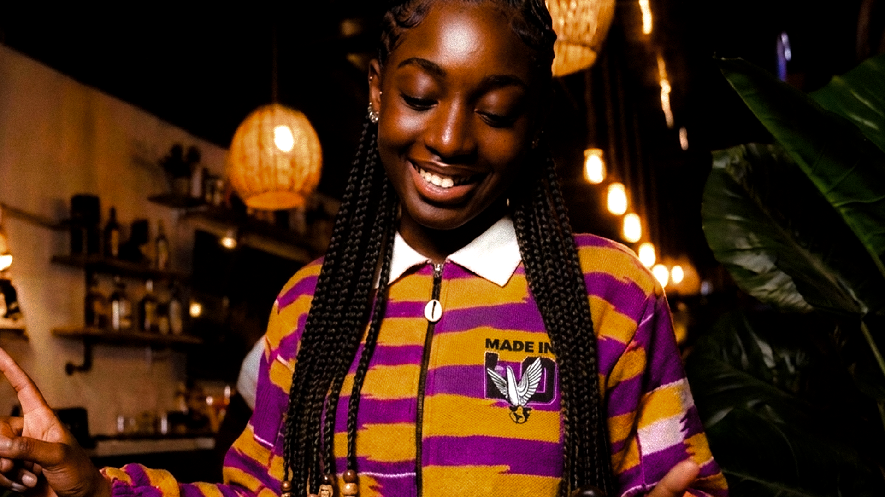

Made in Lo
Documentation
Shop
1.

Made in Lo
redefined
the style
2.

Wear Your Identity
3.

Rare fit
high vibes and mood
4.

AFRICA identity in our fit
5.

Own Your Vibes
From logic to fabric.
The architecture of style.
Discover the process.